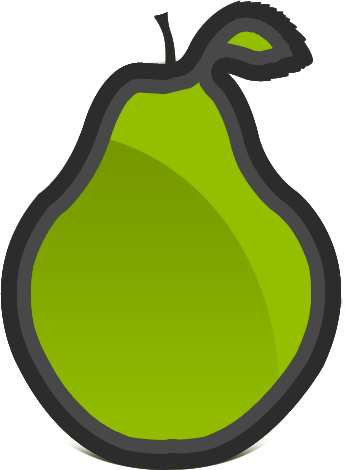

PeaRoxy
Complete solution for bypassing any firewall system

PeaRoxy by PeaRoxy.com is licensed under a Creative Commons Attribution-NonCommercial-ShareAlike 3.0 Unported License .
Permissions beyond the scope of this license may be requested by sending email to PeaRoxy's Dev Email .
Welcome to PeaRoxy Project's Website
PeaRoxy is a complete solution for bypassing any firewall or restriction. Possible usage of PeaRoxy are:
- Accessing free internet in school/work
- Accessing free internet in countries with strict filtering/censorship systems.
- Bypassing any firewall limiting access to certain Domains/IPs or Ports
- Bypassing any limitation based on your geo-ip
- Transferring information with encryption in unsafe networks
Why PeaRoxy?
There are a lot of other solutions out there. PPTP, L2TP. OpenVPN, SOCKS, Http Proxy and so on, yet they all have their own disadvantages.
Mainly, none of them designed to be undetectable. PPTP and L2TP are using known ports and can be blocked easily by firewalls. HTTP and HTTPS proxies are not encrypted and a firewall can block domains through them, in the same way it does with normal connections.
OpenVPN and similar projects has a special protocol or using SSL as a method for encryption; both ways are block-able with a content-filtering and protocol-filtering firewall.
PeaRoxy developed with the idea to make an unblock-able, open-source and easy to use solution for bypassing any firewall.
What is PeaRoxy?
PeaRoxy is a complete solution for bypassing firewalls. It has a WPF Windows based client and different type of servers. MacOSX and Linux clients are in to-do list.
Like other solutions it has a server application that can be executed on Windows operating systems with .Net4 and on Linux and OSX using Mono. This, of-course give users the best experience, yet not all users have a dedicated system to run their own server.
Other types of server are ASPear and PHPear servers. These light-weight servers are based on Aspx.Net and PHP for handling HTTP and HTTPS traffics coming from PeaRoxy client.
How Secure is PeaRoxy?
PeaRoxy has its own protocol; this protocol supports encryption with two methods and in two direction. Each user and each client has their own settings for encryption. In other word both server and client are responsible for data they send to other side.
Actually reason of this type of design is that, PeaRoxy never designed to be safe. It is designed to be lightweight and undetectable and keeping these goals in mind show us that in a lot of cases there is no need for encryption from server side and this can slow server down too. So it is server that can decide whenever it wants to send encrypted data to clients or not. But at same time user can change settings for uploads to prevent detecting of uploading data.
Currently servers can reject encryption/compression, but there is no option for this behavior in client application. We have it in our to-do list.
Two available methods for encryption are SimpleXOR and TripleDES. SimpeXOR is easily breakable for an expert hacker and mainly developed to confuse firewalls and content-filtering systems, yet TripleDES is lot more stronger, but it is slower and use more resource.
PeaRoxy also supports compression of data using gZip and Deflate.
Features
PeaRoxy Protocol
- Encryption of data
- Compression of data
- HTTP forger to confuse firewalls
Windows WPF Client
- Supports PeaRoxy, PHPear, ASPear, SOCKS 4/5 and HTTPS as server
- Supports grabbing of data using a virtual network adapter (OpenVPN driver)
- Supports communicating with other applications through HTTP, HTTPS and SOCKS
- SmartPear and Anti-DNSGrabber which will forward traffic through tunnel only if access to domain/ip/port was blocked through direct connection
- Automatic Configuration Script generator
- Local DNS resolver
- User Friendly and Interactive UI
- Error reporting through browser
PeaRoxy Server
- Supporting Windows, Linux and OSX
- Possibility to route unrelated data to other domains and ports
- Full support for encryption and compression
- Full support for outgoing connections: HTTP, HTTPS and TCP Socket
- Possibility to force users to authenticate
ASPear and PHPear Servers
- Supporting HTTP and HTTPS connections
- Supporting SimpleXOR encryption (And TripleDES in ASPear)
- No root/administrator access needed
- Unique protocol and yet Undetectable
- Possibility to force users to authenticate
To Do
- PeaRoxy Client: Possibility to reject encryption and compression from server
- PeaRoxy Client: Auto update of application and SmartPear list
- PeaRoxy Client: Adding new server type
- Project: Adding new server type
- Project: Online database for active servers and possibility to select a random Open server for using free internet without configuring a server manually
Support or Contact
- You can report any problem and ask for help about PeaRoxy via "Issue" page in GitHub: Project's Issues
- You can contact me by sending private messages to my user in GitHub: @PeaRoxy
- You can learn more by visiting project's wiki in GitHub, which is not of-course completed yet: Project's Wiki
Responsibilities
Author and Developer of this project has no responsibility about how and why people use this application.